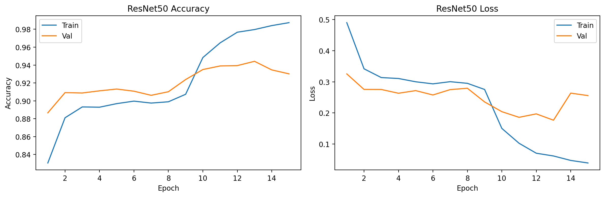
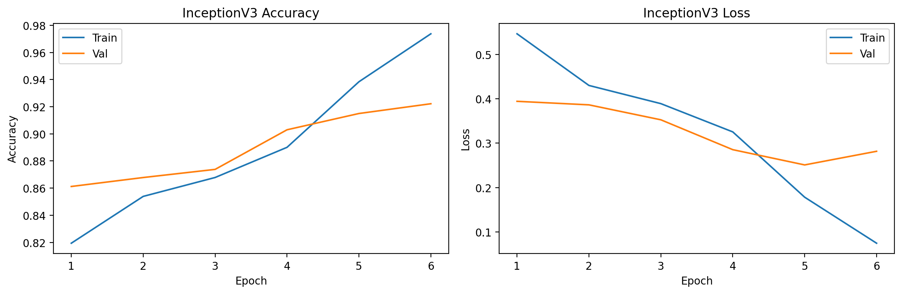
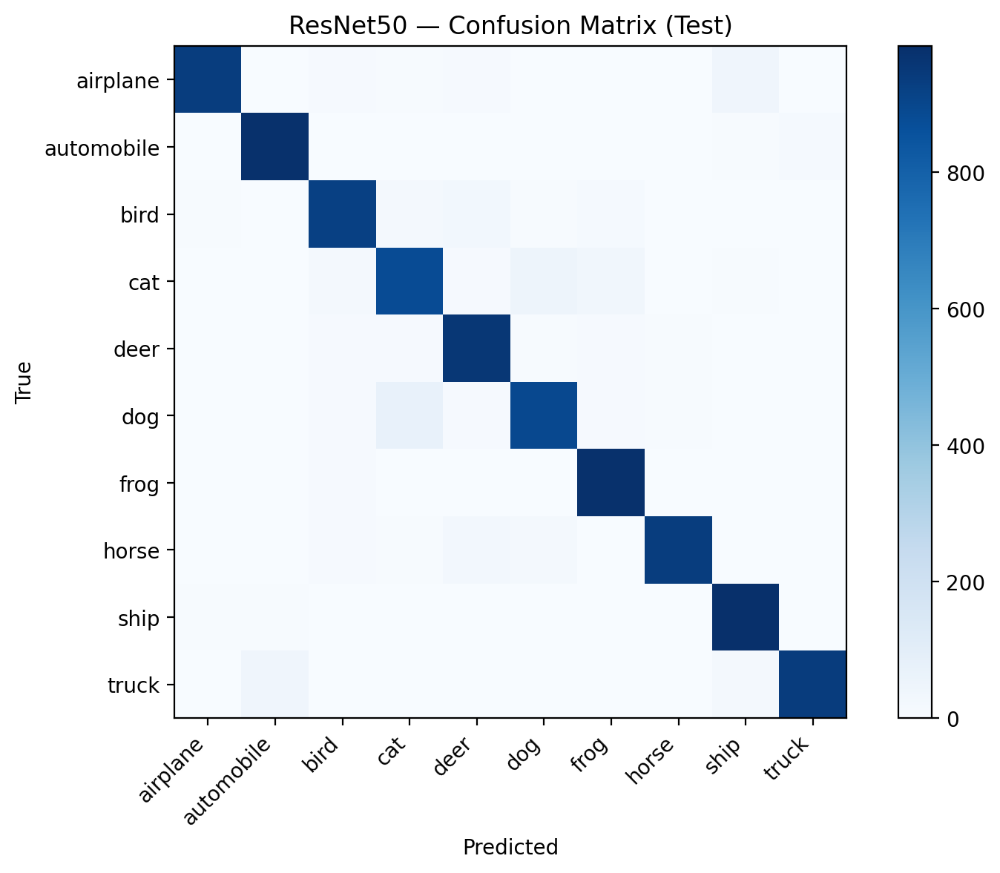
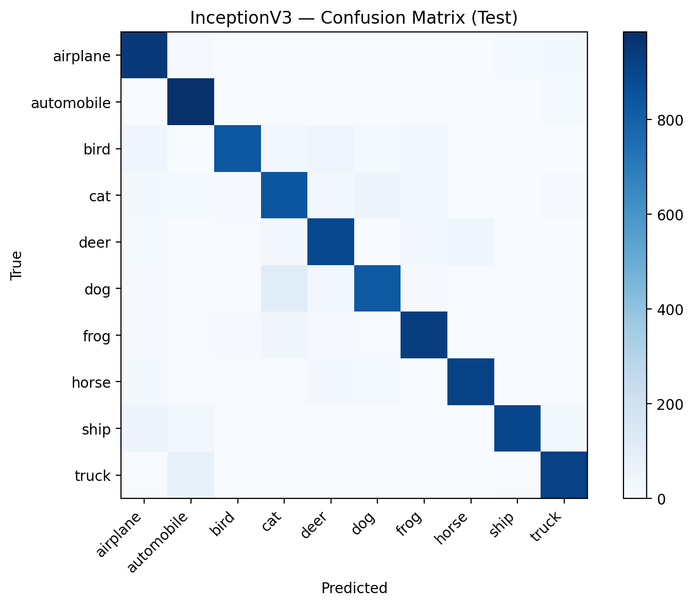

Department of Computer Science
Course: COMP-443 (Deep Learning)
Implementation and Performance Comparison of ResNet and GoogLeNet/Inception for Image Classification
| Students | Ali Hamza (B23F0063AI106) & Zarmeena Jawad (B23F0115AI125) |
| Instructor | Dr. Arshad Iqbal |
| Program | B.S AI - Red |
| Semester | 6th |
| Dataset | CIFAR-10 |
| Models | ResNet50 and InceptionV3 (Transfer Learning) |
| Framework | TensorFlow / Keras |
| Submission Date | April 27, 2026 |
Abstract— This assignment implements and compares two pretrained convolutional neural network backbones, ResNet50 and InceptionV3 (GoogLeNet/Inception family), for CIFAR-10 classification using transfer learning. A two-stage protocol is used: (i) train only the new classifier head while freezing the ImageNet backbone, followed by (ii) fine-tuning by unfreezing the last N backbone layers with a smaller learning rate while keeping BatchNorm layers frozen. Results are evaluated using test accuracy/loss, training curves, confusion matrices, and per-class precision/recall/F1.
Keywords— CIFAR-10, Transfer Learning, Fine-tuning, ResNet50, InceptionV3, Confusion Matrix, Classification Report.
The objective is to implement and compare ResNet50 and GoogLeNet/Inception (InceptionV3) using transfer learning on a standard dataset, and report differences in accuracy, loss, training time, and model size. The expected artifacts include training curves, confusion matrices, and a short report.
Assignment_03_Image_Classification_ResNet50_vs_InceptionV3_CIFAR10.ipynbfigures/,
results/, models/, reports/.
CIFAR-10 contains 60,000 RGB images (32×32) across 10 classes. Since ImageNet pretrained models expect larger inputs, CIFAR-10 images are resized to 224×224 for ResNet50 and 299×299 for InceptionV3. Model-specific preprocessing functions are applied to match the ImageNet training distribution.
def make_dataset(x, y, image_size, preprocess_fn, training, batch_size, name):
ds = tf.data.Dataset.from_tensor_slices((x, y))
if training:
ds = ds.shuffle(10_000, seed=SEED, reshuffle_each_iteration=True)
def _map(img, label):
img = tf.cast(img, tf.float32)
if training:
img = augment(img)
img = tf.image.resize(img, image_size, method="bilinear")
img = preprocess_fn(img)
return img, tf.one_hot(label, num_classes)
ds = ds.map(_map, num_parallel_calls=AUTOTUNE)
ds = ds.batch(batch_size).prefetch(AUTOTUNE)
return ds
Both models use ImageNet weights with the top classification layer
removed (include_top=False) and global average pooling. A
dropout layer is used for regularization, followed by a dense softmax
classifier sized to the CIFAR-10 class count (10 classes).
backbone = ResNet50(weights="imagenet", include_top=False, pooling="avg")
backbone.trainable = False
x = backbone(inputs, training=False)
x = layers.Dropout(0.3)(x)
outputs = layers.Dense(num_classes, activation="softmax", dtype="float32")(x)Training is performed in two stages for stability and to reduce overfitting: head training with a frozen backbone, then fine-tuning by unfreezing the last N layers with a lower learning rate. BatchNorm layers are kept frozen during fine-tuning to avoid instability on small batches.
| Stage | Trainable Parameters | Learning Rate | Epochs | Notes |
|---|---|---|---|---|
| Head Training | Classifier head only | 1e-3 | 8 | Backbone frozen |
| Fine-tuning | Last N backbone layers + head | 1e-4 | 7 | BatchNorm frozen |
def set_finetune(backbone, unfreeze_last_n):
backbone.trainable = True
for layer in backbone.layers[:-unfreeze_last_n]:
layer.trainable = False
freeze_batchnorm(backbone)| Setting | ResNet50 | InceptionV3 |
|---|---|---|
| Input size | 224×224 | 299×299 |
| Batch size | 64 | 32 |
| Epochs (head + fine-tune) | 8 + 7 | 8 + 7 |
| Unfreeze depth (last N layers) | 40 | 60 |
| Learning rates (head → fine-tune) | 1e-3 → 1e-4 | 1e-3 → 1e-4 |
The models are evaluated on the CIFAR-10 test set using accuracy and cross-entropy loss. To understand class-wise behavior, confusion matrices and classification reports (precision, recall, and F1-score per class) are computed.
y_true, y_pred = predict_labels(model, test_ds)
cm = confusion_matrix(y_true, y_pred)
print(classification_report(y_true, y_pred, target_names=class_names))
This run produced the metrics saved in
results/metrics.json and
results/summary_table.csv. ResNet50 achieved higher test
accuracy and lower test loss compared to InceptionV3.
| Model | Test Accuracy | Test Loss | Training Time (min) | Model Size (MB) | Params | Input Size |
|---|---|---|---|---|---|---|
| ResNet50 | 0.9398 | 0.1936 | 9.98 | 211.45 | 23,608,202 | 224×224 |
| InceptionV3 | 0.8988 | 0.3015 | 5.22 | 164.84 | 21,823,274 | 299×299 |




The lowest F1-score classes indicate which categories were most challenging. For ResNet50: cat (0.8787), dog (0.9041), bird (0.9266). For InceptionV3: cat (0.8246), dog (0.8657), deer (0.8811). These patterns are consistent with CIFAR-10, where visually similar animals commonly confuse classifiers after upscaling from 32×32.
ResNet50 outperformed InceptionV3 on test accuracy and loss in this experiment. A likely reason is that the residual architecture often fine-tunes robustly under moderate augmentation and limited epochs, while InceptionV3 may be more sensitive to preprocessing, input resizing, or the selected unfreeze depth. Additionally, CIFAR-10’s low resolution can reduce the benefit of the larger 299×299 input, while still increasing compute cost.
In practice, the choice depends on constraints: InceptionV3 was smaller and faster to train here, while ResNet50 produced the best test accuracy. For deployment, one must balance accuracy, latency, memory, and storage size.
figures/: curves and confusion matricesresults/: metrics, histories, classification reports
models/: saved Keras models (*.keras)reports/: archived old reportsThis assignment demonstrates transfer learning with staged fine-tuning on CIFAR-10. Both pretrained architectures achieved strong performance, while ResNet50 performed best on this run. Future improvements could include stronger augmentation, label smoothing, a learning-rate schedule tuned per backbone, and systematic exploration of unfreeze depth and batch size.
[1] K. He, X. Zhang, S. Ren, and J. Sun, “Deep Residual Learning for
Image Recognition,” in CVPR, 2016.
[2] C. Szegedy et al., “Rethinking the Inception Architecture for
Computer Vision,” in CVPR, 2016.
[3] A. Krizhevsky, “Learning Multiple Layers of Features from Tiny
Images,” 2009 (CIFAR-10).